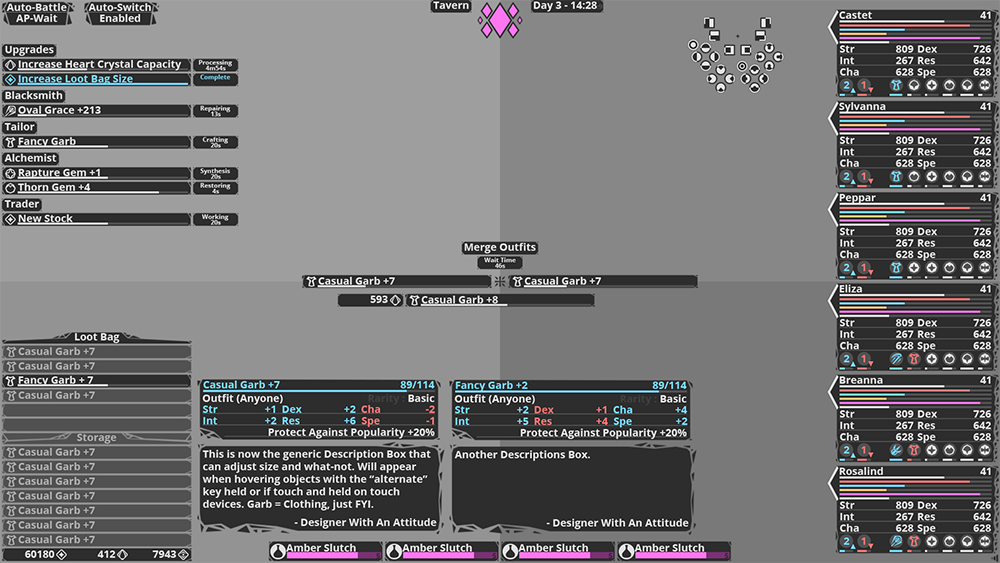

Back at it again!~
November 28, 2018
Michael here with a blog post! (Finally) Plan is to make Wednesday my new flexible blog post day, going to be trying to do smaller updates with occational larger posts every once in a while. As always tho, I'm terrible at updating these things and traffic is so scarce I may or may not follow through with it. This post also comes with a minor site update, made some things animate a bit quicker and color-coded the main nav bar, some format changes as well but nothing major done here.
It's been a long time since a blog post, (this effectively acting as a re-boot of sorts) so I'll just outline my current plans rather than try and say what's changed. First off with video stuff I've kinda slowed down quite a bit on it all, I'm still producing high quality videos when I can but releases will be scattered depending on what I spend time on. Right now I'm just working on whatever I feel like and recently that just hasn't been video stuff, but I really wana get back into doing creative video stuff so we'll see where that goes (more in my Video Content update). For side projects I'm working on some basic hacking stuff that may be publicly released, if it gets finished, and I have a new Fallout 4 mod to work on. The main project that takes my time recently however has been a game project directly related to Crystal Grimoire Heart of the Goddess, more info below.
Release this week was a review for Dead Cells, finally got around to fully checking out the 1.0 release. Was a bit late but I still freaking love the game, so there it is! Didn't release any videos myself for quite a while (check le-old YouTube or my video section for playlists of stuff released since the last blog post) but I have been streaming with some people playing Dongan Ronpa, so that's been... a thing. In the future I'm going to continue doing reviews (of course) but I'm also working on some more creative type videos and doing some voice related stuff. I sadly missed Halloween but one such video is related to that. They'll release eventually. (These videos will be styled like my end-of-the-year videos or more experimental like my Monocraft video.)
I started a new Fallout 4 mod called Lucrative Augments. Updates to it will be pretty slow since it's just a side project for when I'm burnt out on other projects, but it's actually going quite smoothly. Succubus Heart also has updates in the works but I've been ramping down development on it for quite a while so not sure if it'll be updated any time soon. As for hacks I've been messing around with some older games and such, but nothing substantial enough to really post or release, but it may lead to some releases in the future.
Back in July-ish I started a 'new' project called "Crystal Grimoire : Heart of Eternity" which is a smaller game project that's developing along-side Crystal Grimoire : Heart of the Goddess. The idea is to create a sort of prologue and introduce some characters and back story in a much smaller scale while using a lot of cut concepts/characters/ideas from CG:hotG. Development has been slow, but is going smoothly. I'll be making a full post about it eventually but for now I'll just say it's a sudo-turn based RPG with real-time elements and some basic survival concepts thrown in. "
There's a lot of work to be done but I've already began building everything in UE4 (my engine choice for Crystal Grimoire : Heart of the Goddess, so it's also being used here). Things are going smoothly with some of the base framework already going and some proto-type style stuff functioning (if not a bit janky). I also released some concept images for the UI quite a while ago (most of which is already built in-engine) so I'll show some of that below. Also a quick thanks to my friend "Evann The Tank" (who you can see in The Broken Chatbox Discord) for helping with some layout/formating ideas!
NOTE : These are all a WIP and may not represent the final product (these are also comps and don't fully show what they'll look like in-engine)
